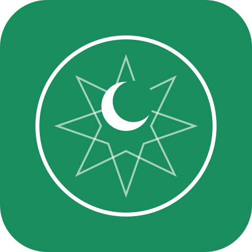

Skip to content
×

WaqtSalat
v1.0.0
No ads
No tracking
Always free
Habous calculation
Open source
Beta — Prayer times may differ slightly from official schedules. Always verify with your local mosque.
Contribute
View source code & contribute
Report a bug
Report issues or request features
Share
Share WaqtSalat with friends & family
Close
--°
-- km
×
اختر اللغة
العربية
Français
English
التالي →
اختر مدينتك
تحديد الموقع
التالي →
تم الإعداد
تم ✓
N
S
E
W
العربية
Français
English